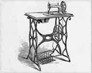
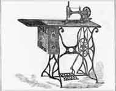
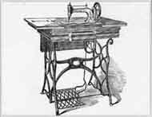
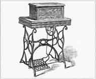
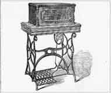
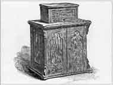
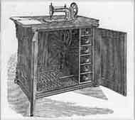
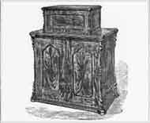
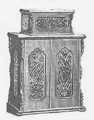

SINGER CABINETS
New Family/Model 12 Cabinets
Click on Thumbnails for Larger Pictures
NF01

NF02

NF03

N03(closed)

NF04

NF05

NF06

N06 (closed)

NF07

© Helen Scarth 2002, 2003. All Rights Reserved
This web page or any portion of it may not be reproduced in any form without the prior written permission of the copyright holder